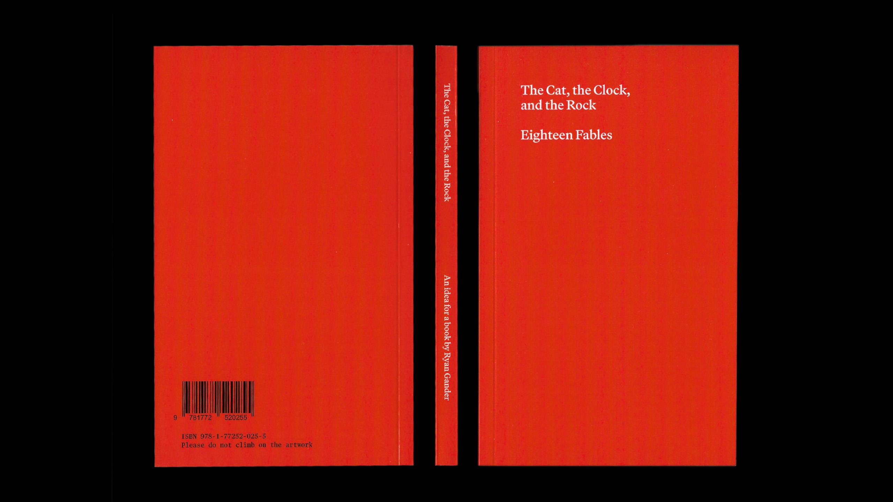
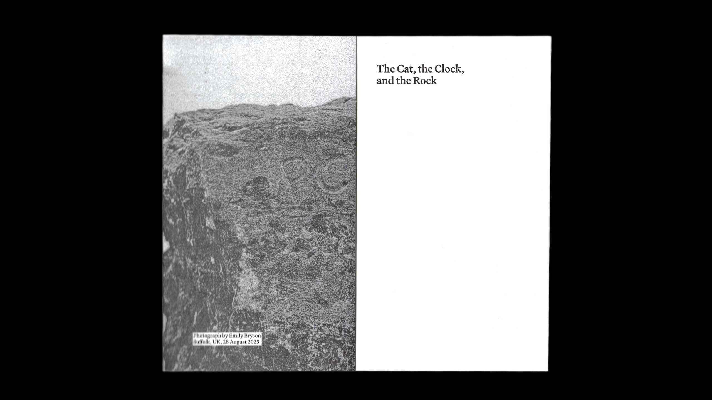
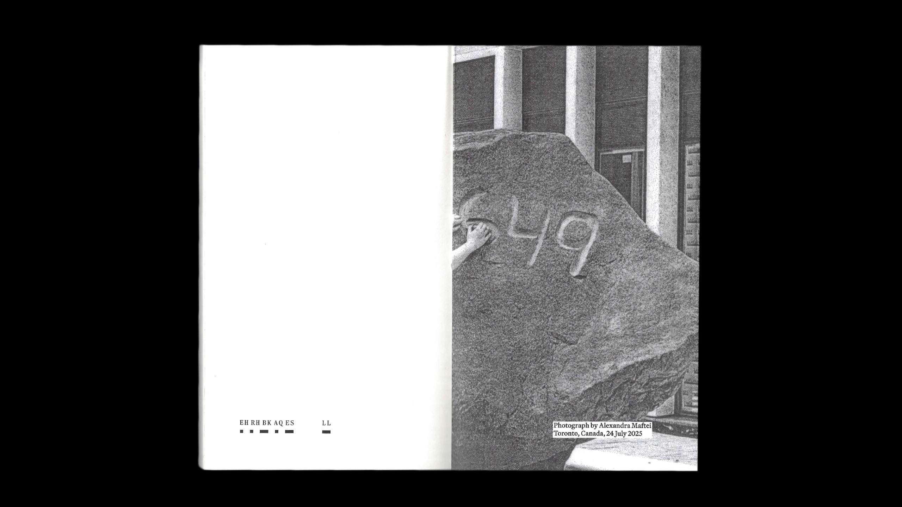
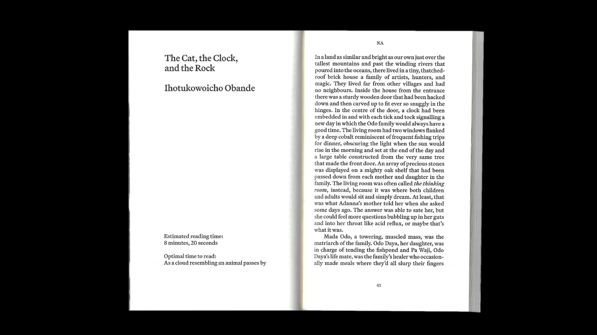
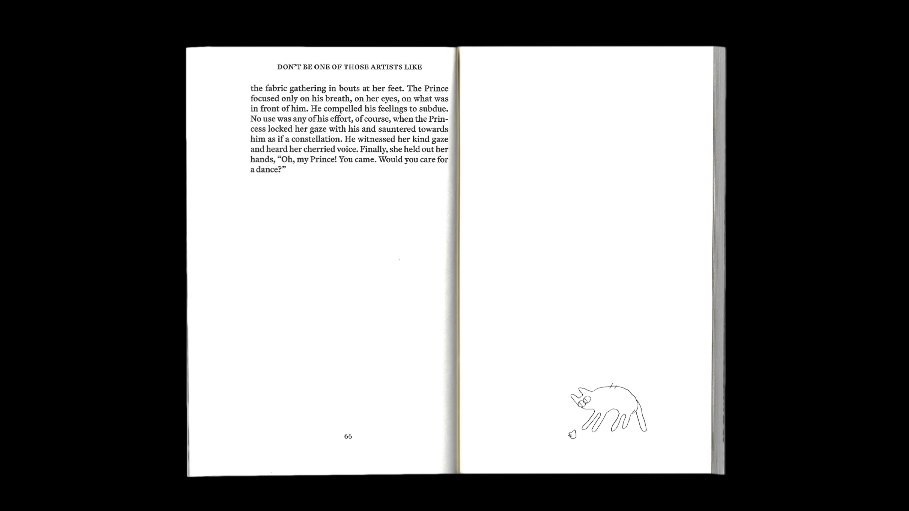
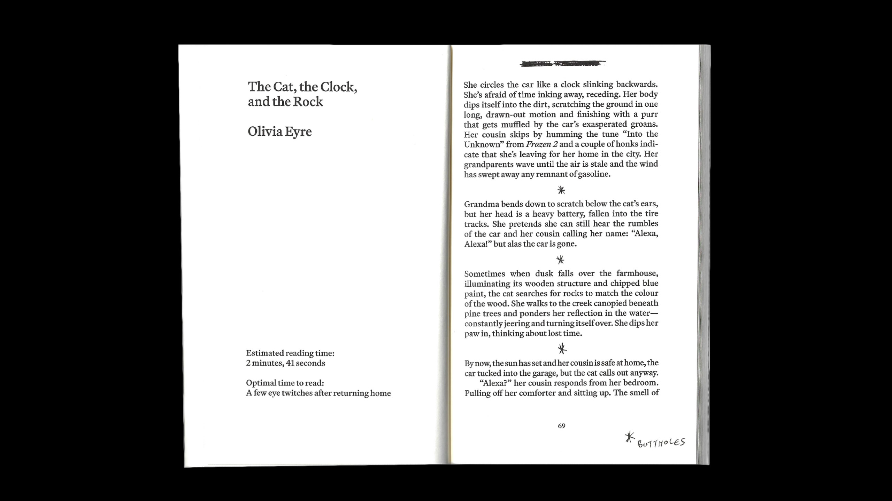
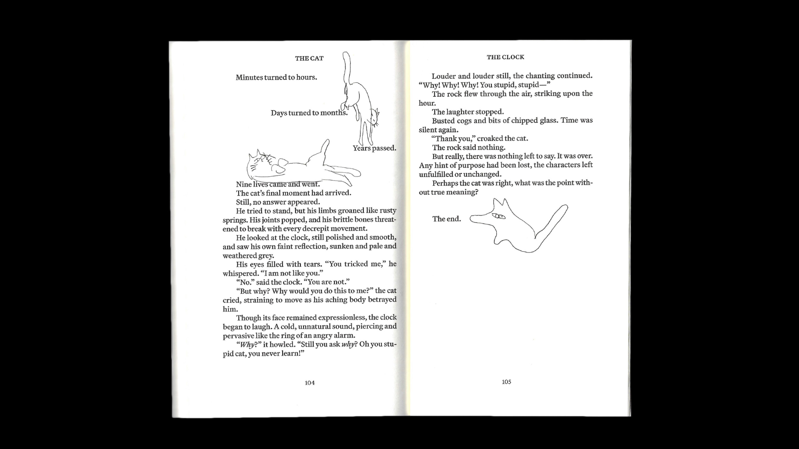

A book of 18 fables all titled "The Cat, the Clock, and the Rock" based on Ryan Gander's public sculpture of the same name. This book was designed in collaboration with Alexandra Maftei, Craig Rodmore, and Olivia Wideman, and published by OCAD University with support from Lanterra Developments and Ryan Gander Studio.
The Cat, the Clock, and the Rock is available for purchase at Art Metropole↗

The fables were solely based on the title without seeing the sculpture, and the initial design proposal was done in the same fashion. The full sculpture is only hinted at in the final book to give readers a similar experience.






This publication was designed to tell a subtle story through each of its elements. For example, if you read only the optimal reading times, you will have a different experience than if you followed the cats around the book or read the fables normally. What seems to be an unassuming book on the outside is gradually layered with oddities.
The Cat, the Clock, and the Rock launched to the public on 5 March, 2026. To both advertise and commemorate the project's completion, I designed a poster on which we (myself, Alex, and Olivia) overprinted several unused cat drawings and back cover designs.